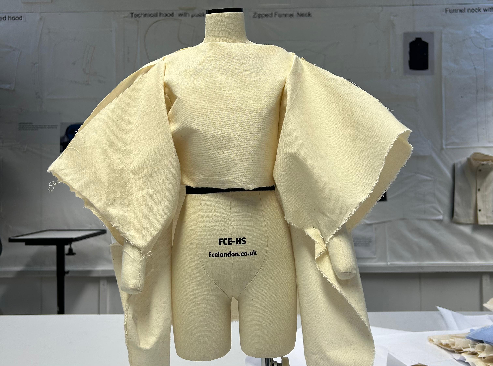
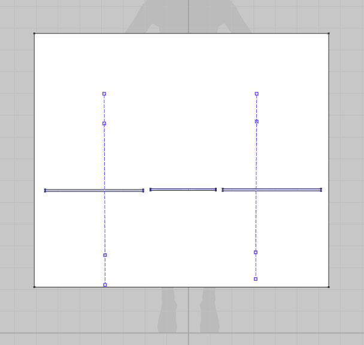
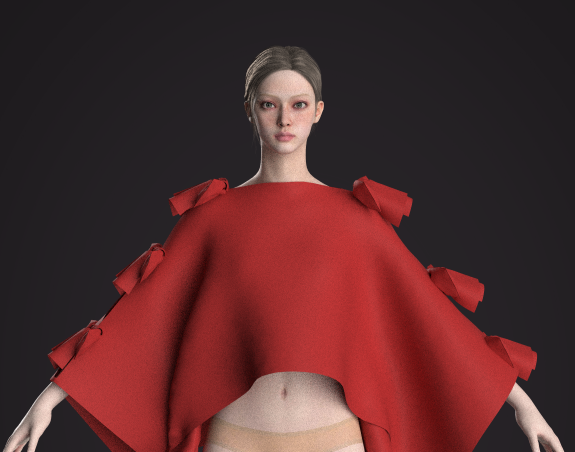
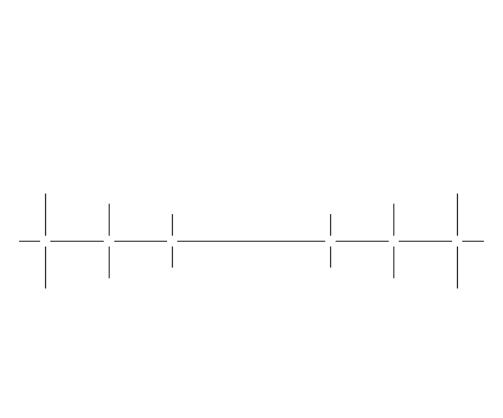

Silhouette
Every design begins as a silhouette — the first gesture toward freedom within form. We sketch the body's relationship to fabric before a single measurement is taken.
The silhouette defines how restriction and expression will meet. It is the soul of the garment before it becomes structure.

Pattern (Clo 3D)
Using Clo 3D, we translate each silhouette into a precise digital pattern. Every panel interlocks with the next — the zero-waste constraint mirroring the concept of restriction as creative force.
The software allows us to test fit, drape, and construction before a single real thread is cut — intention before action.

Clo 3D Rendering
Before cutting a single thread, every garment is rendered in full 3D — visualising freedom before it is made real, with fabric physics and drape simulated to near-perfect accuracy.
This eliminates the need for multiple physical toiles, reducing waste at the sampling stage — limitation leading to adaptability.

Laser Cutting
Digital patterns are sent directly to laser cutters — achieving millimetre precision. Every cut is intentional, an act of expression, not excess.
The laser follows our zero-waste nesting layout exactly, consuming the full fabric length — nothing is silenced, nothing is wasted.

Garment Manufacturing
Laser-cut panels are assembled with care — each seam placed exactly where the pattern demands. Construction that follows the geometry, where restriction becomes structural honesty.
Every stitch is a deliberate design decision. The result is a garment that holds together without holding back.

Embroidery
The final act — hand embroidery applied as both surface decoration and structural reinforcement. Each motif is chosen, not imposed — expression given its place.
Embroidery marks the garment as individual and alive. It is the human touch that transforms silence into expression.